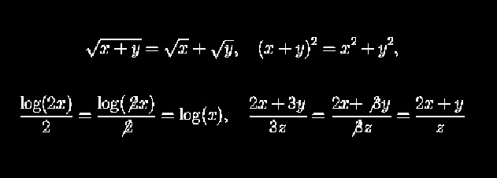

Office Hours:TTh 10:00-11:00am,
W. 2:00-3:00pm, and
by appointment.
Text:
Discrete Mathematics with Applications 2nd
Edition by Susanna S. Epp.
Remark:
The syllabus,
homework, quizzes, worksheets, and tests are in pdf format and can
be read with Adobe's Acrobat Reader which can down loaded here.
Tests:
Quizes:
Homework:
Grading:
There will be three midterms of 100 points
each. Homework will be collected and will count for 100 points.
The Final will count for 150 points. This gives a total of 550
points and you grade will be based on the total out of the 550.
In summary:
Three midterms @ 100 points each
300 points
Total for homework
100 points
Final
150 points
Total
550 points
Note that the homework counts as much as a test so it is
important to spend time on the homework.
Letter grades will be assigned to all
the tests. In general the curve on the midterms will be
A 90-100,
B 80-89,
C 70-79,
D 60-69,
F 0-59, but this can vary.
The last day to drop is Monday, February 2 and you should have a
reasonable idea of where you stand by then.
The dates of the tests will be:
Test 1
Tuesday, February 12
Test 2
Thursday, March 21
Test 3
Tuesday, April 23
Final
Monday, May 6, 2:00pm
Quizzes:
There will be in class quizzes. They will be part of your
homework score.
There will be not make up exams or quizzes:
If you miss
a test, then your score on that exam is 75% of the average of
your other test scores including the final. If a second exam is
messed the score on it is zero. Exams will be taken in class on
the days listed above. So don't ask to take an exam early or late
because you have to be ``out of town'' or some other reason. Late
homework will not be accepted. Likewise there will be not make up
quizzes. If you miss a quiz then you lose the points. As a
reward to anyone who turns on all the homework and takes all the
quizzes will get 10 extra points. Missing only one homework or
quiz is worth 5 extra points. On the other hand if someone leaves
class early without permission then I reserve the right to give
them a zero on the homework or quiz for the day.
Getting Help:
Besides my office hours you can get help in the
Math Lab.
This is a free tutoring service supplied by the mathematics
department. Starting this semester it will have three locations
LeConte 101, Towers' Conference Center, and Bates Area. The hours
that the math lab is open can be found
here.
About partial credit and bad
algebra:
Some arithmetic errors do not bother me much. If your
get in a hurry and get 7x8=48 it is not going to cost you
much, provided you are doing every thing else correctly.
However, there are certain mistakes (involving misuse of high
school in such a way that always gives the wrong answer), that will
not be tolerated. If you make these
mistakes I will mark the entire problem wrong. Here are some
examples of zero point errors:

This is not meant to scare you, but just to let you know where things
stand.